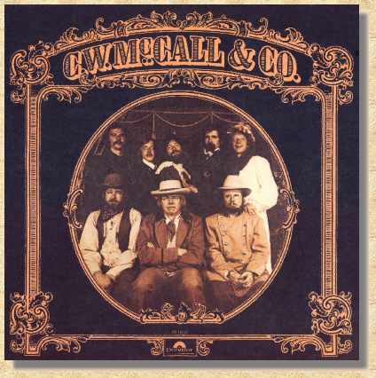

 C. W. McCall & Co. Side One 1. Outlaws And Lone Star Beer+ 2. Wheels Of Fortune 3. City Of New Orleans 4. The Little Things In Life* 5. The Cowboy Side Two 1. Milton 2. Flowers On The Wall 3. Silver Cloud Breakdown+ 4. I Wish There Was More That I Could Do 5. Hobo's Lullaby |
|
Side One 1. Outlaws And Lone Star Beer+ Belinda Music Inc. / Shelmer-Poe Music BMI (Bob Duncan / John Durril) 2. Wheels Of Fortune Widget BMI (Terry Skinner / J.L. Wallace) 3. City Of New Orleans Kama Rippa Music / Turnpike Tom ASCAP (Steve Goodman) 4. The Little Things In Life* American Gramaphone SESAC (Bill Fries / Chip Davis) 5. The Cowboy McCall Music BMI (Ron Agnew) Side Two 1. Milton McCall Music BMI (Ron Agnew) 2. Flowers On The Wall Belinda Music Inc. BMI (Lewis Dewitt) 3. Silver Cloud Breakdown+ (Instrumental from the Motion Picture "Convoy") American Gramaphone SESAC (Chip Davis / Bill Fries) 4. I Wish There Was More That I Could Do Smog City / ABC Dunhill Music Inc. BMI (Walt Meskell / Tim Martin) 5. Hobo's Lullaby Fall River Music Inc. BMI (Goebel Reeves) Produced by Don Sears, Chip Davis Arranged by Chip Davis Engineered by Don Sears, Jim Wheeler, John Boyd, Ron Ubel Recorded & Mastered at Sound Recorders, Inc., Omaha, Nebraska and Kansas City, Missouri Album Design by Bill Fries Art Direction and Production by Dudycha & Associates Drums, Percussian: Chip Davis / Keyboards: Jackson Berkey / Bass: Eric Hansen / 6 String Guitar: Ron Agnew / 6 String Guitar, National Guitar Banjo: Walt Meskell / Banjo: Steve Hanson / 6 String Guitar, 12 String Guitar, Electric Guitar: Ron Cooley / Steel Guitar: Steve Basore / Strings: *Steve Shipps, Sue Robinson, David Lowe, **Dorothy Brown, Hugh Brown, Miriam Dufflemeyer, Lucinda Gladics, James Hammond, Joe Landes, Beth McCollum, Merton Shatzkin, Alex Sokol / Vocals: Chip Davis, Jackson Berkey, Walt Meskell, Ron Agnew, Gary Morris, Sarah Westphalen, Ruth Horn, Milton E. Bailey III Esq. (c) (P) 1979 POLYDOR Incorporated, except + (c) (P) 1978 POLYDOR Incorporated Manufactured and Distributed by POLYDOR Incorporated 810 Seventh Avenue New York, N.Y. 10019 Printed in U.S.A. |

This Web page is hosted by: Mark L. Evans
Written and maintained by: Miles A. Lumbard
Send Comments to:Miles A. Lumbard